ggplot2
Pierre Gestraud
4 octobre 2016
Example data
head(mpg)## manufacturer model displ year cyl trans drv cty hwy fl class
## 1 audi a4 1.8 1999 4 auto(l5) f 18 29 p compact
## 2 audi a4 1.8 1999 4 manual(m5) f 21 29 p compact
## 3 audi a4 2.0 2008 4 manual(m6) f 20 31 p compact
## 4 audi a4 2.0 2008 4 auto(av) f 21 30 p compact
## 5 audi a4 2.8 1999 6 auto(l5) f 16 26 p compact
## 6 audi a4 2.8 1999 6 manual(m5) f 18 26 p compactQuickstart
ggplot(mpg, aes(x = displ, y = hwy)) + geom_point()
A plot has 3 main components:
- data
- a set of aesthetics
- a set of layers (mainly geometries)
ggplot(mpg, ## data
aes(x = displ, y = hwy)) + ## aesthetics
geom_point() ## layer
aesthetics
xyzcolorfillsizetext
Set color aesthetic to manufacturer variable
ggplot(mpg, aes(x = displ, y = hwy, color = manufacturer)) + geom_point()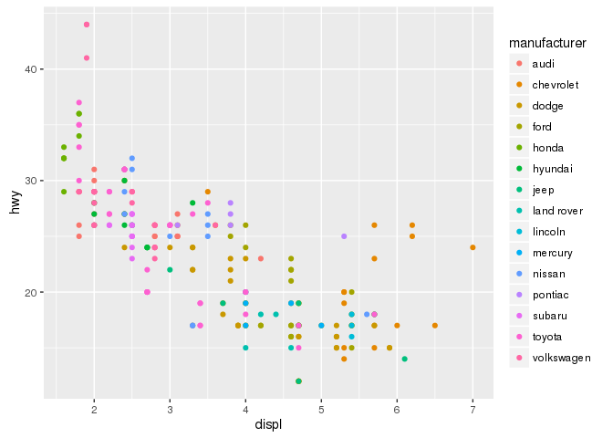
Set size aesthetic
ggplot(mpg, aes(x = displ, y = hwy, size = cyl)) + geom_point()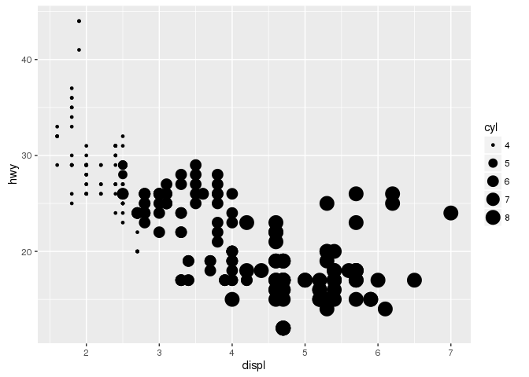
Alpha aesthetic
ggplot(mpg, aes(x = displ, y = hwy, size = cyl, color = class)) + geom_point(alpha = 0.5)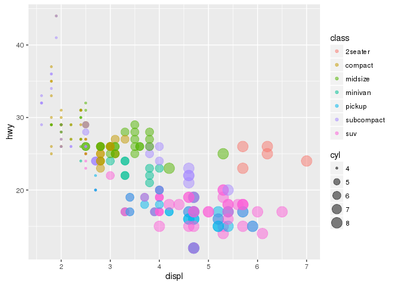
Set an aesthetic to a fixed value
ggplot(mpg, aes(x = displ, y = hwy)) + geom_point(aes(color = "blue"))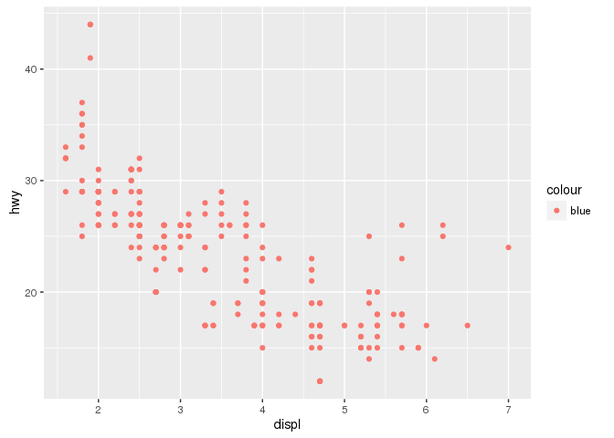
ggplot(mpg, aes(x = displ, y = hwy)) + geom_point(color = "blue")Set an aestetic to a discrete numeric value
ggplot(mpg, aes(x = displ, y = hwy, color = cyl)) + geom_point() ## gradient scale
ggplot(mpg, aes(x = displ, y = hwy, color = factor(cyl))) + geom_point() ## discrete scale
Aesthetics can be defined inside geom
ggplot(mpg, aes(x = displ, y = hwy)) + geom_point(aes(color = class))
Aesthetics defined inside ggplot apply to all geom
ggplot(mpg, aes(x = class, y = hwy, color = class)) + geom_boxplot() + geom_point()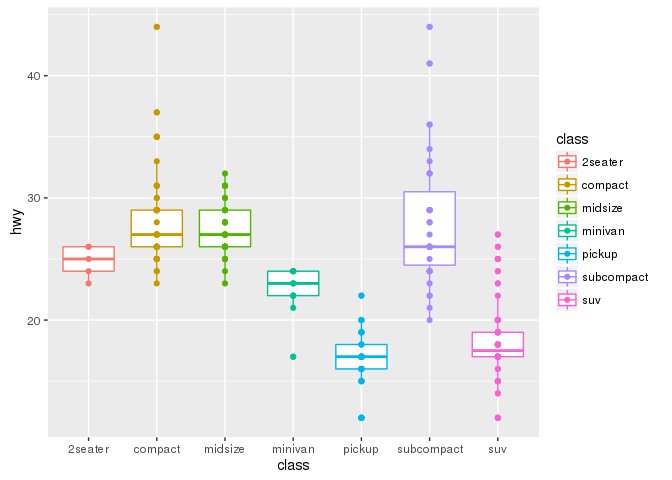
a ggplot is an object
We can build a ggplot object in several steps
g <- ggplot(mpg, aes(x = displ, y = hwy)) + geom_point()
g ## or print(g)
g <- g + ggtitle("hwy vs displ")
ggeom
- one variable
- continous
geom_densitygeom_histogramgeom_freqpoly
- discrete
geom_bar
- continous
- two variables
- continous X, continuous Y
geom_pointgeom_smoothgeom_text
- discrete X, continuous Y
geom_bargeom_boxplotgeom_violin
- bivariate distribution
geom_density2dgeom_hexgeom_bin2d
- continuous function
geom_linegeom_step
- continous X, continuous Y
- three variables
geom_contourgeom_tile
data distributions
For histograms and densities only x is mandatory
ggplot(mpg, aes(x = hwy)) + geom_histogram()
ggplot(mpg, aes(x = hwy)) + geom_density()ggplot(mpg, aes(x = hwy)) + geom_freqpoly()Changing bins
ggplot(mpg, aes(x = hwy)) + geom_histogram(bins = 30)
ggplot(mpg, aes(x = hwy)) + geom_histogram(binwidth = 2)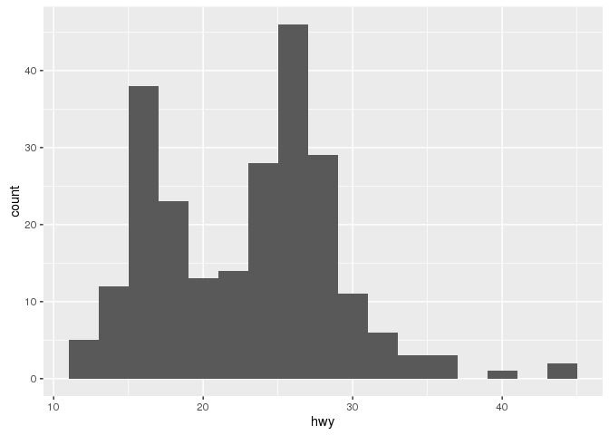
Manually setting breaks
ggplot(mpg, aes(x = hwy)) + geom_histogram(breaks = c(10, 15, 20, 25, 30, 40, 50))
Add fill or color
ggplot(mpg, aes(x = hwy)) + geom_density(fill = "blue", color = "red")
ggplot(mpg, aes(x = hwy)) + geom_density(aes(fill = class))
Boxplots, violins, jitter
boxplots need x and y aestetics
ggplot(mpg, aes(x = class, y = hwy)) + geom_boxplot()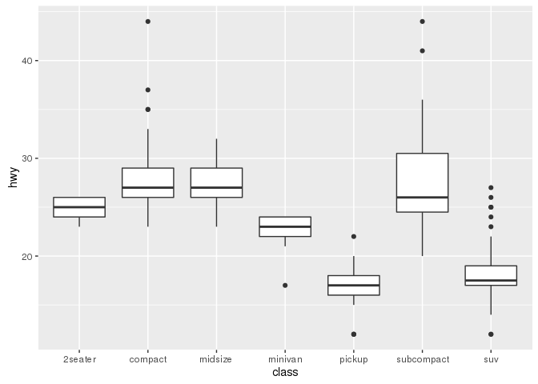
ggplot(mpg, aes(x = class, y = hwy, fill = class)) + geom_boxplot()Add another variable as fill or color will separate boxplots
ggplot(mpg, aes(x = class, y = hwy, fill = trans)) + geom_boxplot()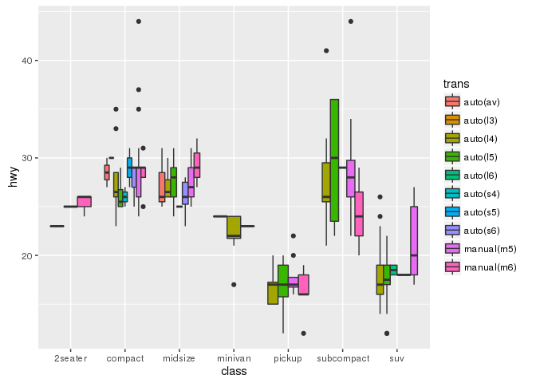
Violin plots
ggplot(mpg, aes(x = class, y = hwy)) + geom_violin()Jitters
ggplot(mpg, aes(x = class, y = hwy)) + geom_jitter()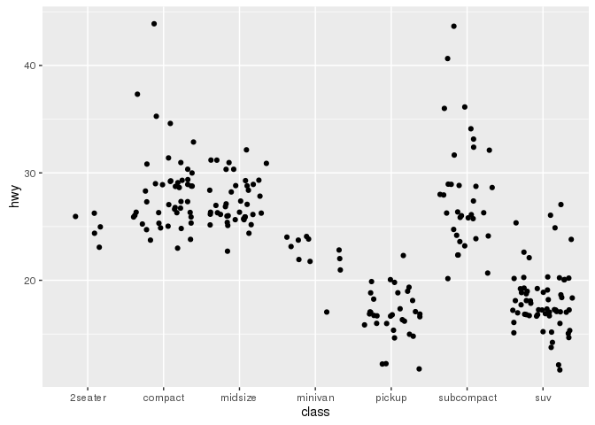
## control width and height of jitter
ggplot(mpg, aes(x = class, y = hwy)) + geom_jitter(width = 0.5, height = 0)ggplot(mpg, aes(x = class, y = hwy)) + geom_boxplot() + geom_jitter(width = 0.5, height = 0)Bars
ggplot(mpg, aes(x = manufacturer)) + geom_bar()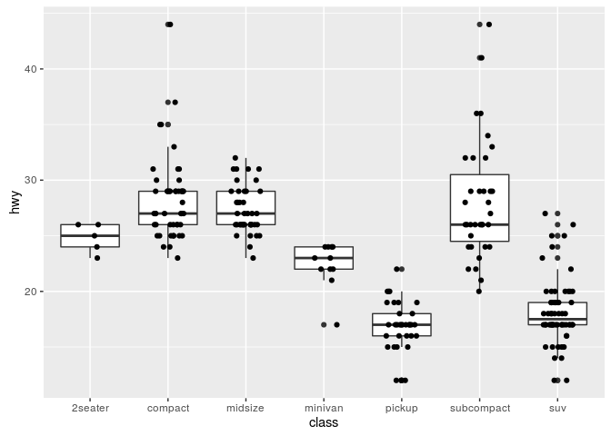
Adding color
ggplot(mpg, aes(x = manufacturer, fill = class)) + geom_bar()
Changing bars positions
ggplot(mpg, aes(x = manufacturer, fill = class)) + geom_bar(position = "stack")ggplot(mpg, aes(x = manufacturer, fill = class)) + geom_bar(position = "dodge")
ggplot(mpg, aes(x = manufacturer, fill = class)) + geom_bar(position = "fill")
Bar plot from count data
d <- data.frame(group = c("a", "b", "c"), n = c(10, 25 , 14))## error
## ggplot(d, aes(x = group, y = n)) + geom_bar()
ggplot(d, aes(x = group, y = n)) + geom_bar(stat = "identity")add a smoother on the plot
Default smoother (loess if <1000 obs, gam otherwise)
ggplot(mpg, aes(x = displ, y = hwy)) + geom_point() + geom_smooth()Linear model
ggplot(mpg, aes(x = displ, y = hwy)) + geom_point() + geom_smooth(method = "lm")
Remove SE
ggplot(mpg, aes(x = displ, y = hwy)) + geom_point() + geom_smooth(method = "lm", se = FALSE)Smooth by group
ggplot(mpg, aes(x = displ, y = hwy, color = class)) + geom_point() + geom_smooth(method = "lm", se = FALSE)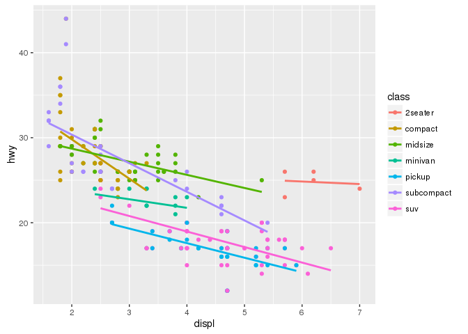
Order of layers in object construction
Order of layers matters
ggplot(mpg, aes(x = class, y = hwy)) + geom_jitter(width = 0.5, height = 0) + geom_boxplot() ggplot(mpg, aes(x = class, y = hwy)) + geom_boxplot() + geom_jitter(width = 0.5, height = 0) Scales
Scales are mainly controlled by scale_* functions. Their names are structured: *scale_‘aestetic name’_‘type’*
scale_color_discrete: discrete scale for color aesteticscale_fill_gradient: continuous scale for fill aestetic
Discrete scales
ggplot(mpg, aes(x = displ, y = hwy, color = class)) + geom_point() + scale_color_discrete(h = c(50, 150))
ggplot(mpg, aes(x = displ, y = hwy, color = class)) + geom_point() + scale_color_brewer(palette = "Set3")ggplot(mpg, aes(x = displ, y = hwy, color = factor(cyl))) + geom_point() + scale_color_manual(values = c("blue", "black", "red", "pink"))
ggplot(mpg, aes(x = displ, y = hwy, color = factor(cyl))) + geom_point() + scale_color_manual(values = c('8' = "blue", '6' = "black", '4' = "red", '5' = "pink"))gradient scales
ggplot(mpg, aes(x = displ, y = hwy, color = hwy)) + geom_point()## 2 colors gradient
ggplot(mpg, aes(x = displ, y = hwy, color = hwy)) + geom_point() + scale_color_gradient(low = "green", high = "red")## diverging color gradient, define low, mid and high colors
ggplot(mpg, aes(x = displ, y = hwy, color = hwy)) + geom_point() + scale_color_gradient2(low = "green", high = "red", mid = "black", midpoint = 25)## n colors gradient
ggplot(mpg, aes(x = displ, y = hwy, color = hwy)) + geom_point() + scale_color_gradientn(colours = terrain.colors(10))xlim/ylim vs coord_cartesian
xlim/ylimselect data inside the range- coord_cartesian zoom in the plot
ggplot(mpg, aes(x = displ, y = hwy)) + geom_point()ggplot(mpg, aes(x = displ, y = hwy)) + geom_point() + xlim(c(2, 6))ggplot(mpg, aes(x = displ, y = hwy)) + geom_point() + coord_cartesian(xlim = c(2, 6))Warning: when computing densities or smoothers, the plot will completely change by using xlim/ylim
ggplot(mpg, aes(x = displ)) + geom_density(fill = "gray50")ggplot(mpg, aes(x = displ)) + geom_density(fill = "gray50") + xlim(c(2, 3))ggplot(mpg, aes(x = displ)) + geom_density(fill = "gray50") + coord_cartesian(xlim = c(2, 3))axis transformation
- flip axes
ggplot(mpg, aes(x = displ, y = hwy)) + geom_point() + coord_flip()- polar coordinates
ggplot(mpg, aes(x = displ, y = hwy)) + geom_point() + coord_polar()- reverse axis
ggplot(mpg, aes(x = displ, y = hwy)) + geom_point() + scale_x_reverse()- log axis
ggplot(mpg, aes(x = displ, y = hwy)) + geom_point() + scale_x_log10()- order of discrete scales
ggplot(mpg, aes(x = fl)) + geom_bar()
## change levels order
mpg$fl2 <- factor(mpg$fl, levels = c("e", "p", "d", "r", "c"))
ggplot(mpg, aes(x = fl2)) + geom_bar()## or use xlim
ggplot(mpg, aes(x = fl)) + geom_bar() + xlim(c("e", "p", "d", "r", "c"))Themes
Themes allow to have a set of graphics with the same style. Some are predefined theme_default, theme_bw, them_minimal, theme_gray...
ggplot(mpg, aes(x = displ, y = hwy)) + geom_point() + theme_bw()ggplot(mpg, aes(x = displ, y = hwy)) + geom_point() + theme_minimal()ggplot(mpg, aes(x = displ, y = hwy)) + geom_point() + theme_dark()We can customize some elements in themes (see http://docs.ggplot2.org/dev/vignettes/themes.html for details)
ggplot(mpg, aes(x = displ, y = hwy)) + geom_point() + theme(panel.background = element_rect(fill = "wheat"), axis.text = element_text(size = 20))Faceting
Facetting allows to display plot separately according to discrete variables
Two functions for facetting: - facet_wrap - facet_grid
ggplot(mpg, aes(x = displ, y = hwy)) + geom_point() + facet_wrap(~class)ggplot(mpg, aes(x = displ, y = hwy)) + geom_point() + facet_grid(.~class)ggplot(mpg, aes(x = displ, y = hwy)) + geom_point() + facet_grid(class~drv)Controling facet_wrap organisation
ggplot(mpg, aes(x = displ, y = hwy)) + geom_point() + facet_wrap(~class, ncol = 2)ggplot(mpg, aes(x = displ, y = hwy)) + geom_point() + facet_wrap(~class, scales = "free")
ggplot(mpg, aes(x = displ, y = hwy)) + geom_point() + facet_wrap(~class, scales = "free_x")All layers are faceted
ggplot(mpg, aes(x = displ, y = hwy)) + geom_point() + geom_smooth() + facet_grid(~drv)
add supplementary information on plot
add lines
ggplot(mpg, aes(x = displ, y = hwy)) + geom_point() + geom_hline(yintercept = 20)ggplot(mpg, aes(x = displ, y = hwy)) + geom_point() + geom_vline(xintercept = 4.5)ggplot(mpg, aes(x = displ, y = hwy)) + geom_point() + geom_abline(slope = -2, intercept = 35)annotate
ggplot(mpg, aes(x = displ, y = hwy)) + geom_point() + annotate(x = 4, y = 30, geom = "point", color = "red", size = 4)ggplot(mpg, aes(x = displ, y = hwy)) + geom_point() + annotate(x = 4, y = 30, geom = "label", label = "annotation") add data from external data.frame
d_annot <- data.frame(xpos = c(2, 5, 8), ypos = c(20, 25, 40), lab = c("l1", "l2", "l3"))
ggplot(mpg, aes(x = displ, y = hwy)) + geom_point() + geom_label(aes(x = xpos, y = ypos, label = lab), data = d_annot)Programming with ggplot2
ggplot2 use non standard evaluation (NSE). How to use variables in aes? aes_string allows standard evaluation.
my_var <- "displ"
ggplot(mpg, aes(x = my_var, y = hwy)) + geom_point()ggplot(mpg, aes_string(x = my_var, y = "hwy")) + geom_point()
Interactivity
For interactive grahics see ggvis or plotly packages
require(plotly)
g <- ggplot(mpg, aes(x = displ, y = hwy)) + geom_point()
ggplotly(g)Extensions
ggrepel: smart geom_text and geom_label placementcowplot: several plots on one pageggraph: visualise graphggmap: plot data on a mapfactoextra: visualise results of factorial analysis (PCA, CA, MCA, MFA, …)ggbio: visualise genomic dataggdendro: visualise dendrograms and trees